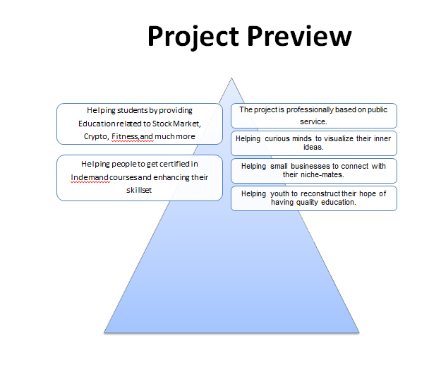

Based on career preferences, there is a huge amount of competitions between a variety of fields which are nowadays more popular because of the sudden market demand for skill development. Excellence in higher education requires a huge interest in developing necessary soft skills which are'nt actually taught in our primary or middle schools due to lack of having experienced parents and society it is very difficult for us to have everyone a good quality of education for a child's future.
Through my passion to reinnovate and reconstruct logical representation of an idea based on mass communication. Student of Data Analytics, Web Development, Social Media Strategy, Psychology and AIML. I am also learning prompt engineering through which I can complete my 80% work in 20% efforts.
In general I understand that being stuck with too much time consuming work , doing your 9 to 5 average job, isn’t it very hesitating and pressurizing a person to feel exhausted even after a high education in academic field like BA, BBA, Btech, BCom and much more. In my concern, we should replace the tradition rat race into self-competition, rote learning into roadmap building, grades into Empowerment.
"A curious mind from the valleys of Kashmir, walking the line between ancient wisdom and digital innovation."
I’m Mehraj Ahmad Itoo, known online as Arish or SamAr. At just 18, I’ve already started building a multi-disciplinary path in:
Psychology & Criminology
Coding (HTML, Python), Ethical Hacking Basics
Canva Product Design
Affiliate & WhatsApp Marketing
Content Creation, AI Tools, & Digital Strategy
I’m not just learning—I’m executing. I’m here to build, sell, solve, and serve. If you need creative solutions, smart content, or digital product strategy—I’m your guy.
“ Sustaining ropes of new ideas and enforcing hopes of creativity, productivity and innovation" . ” © 2025
Get OpenSource Courses With Professional Certificate